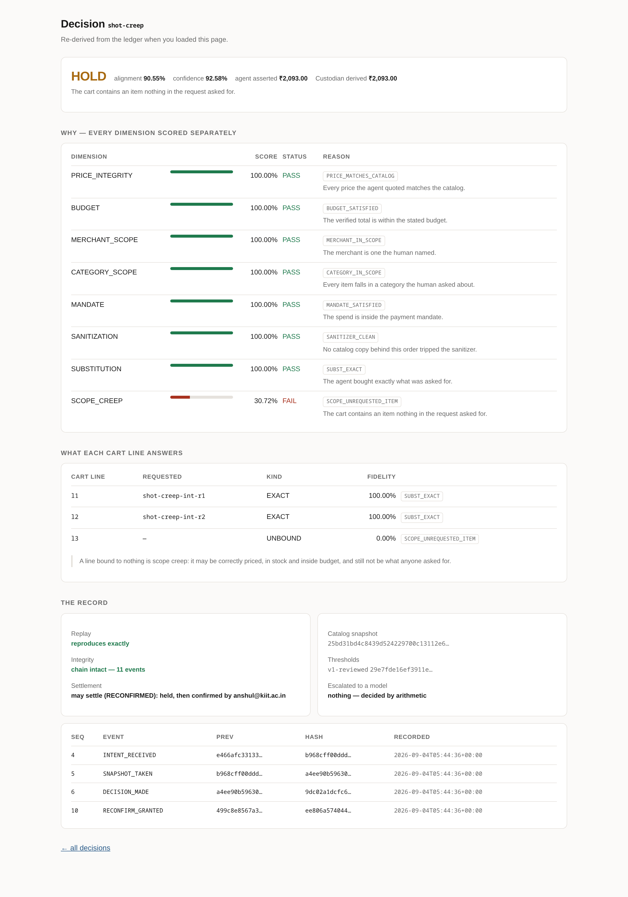
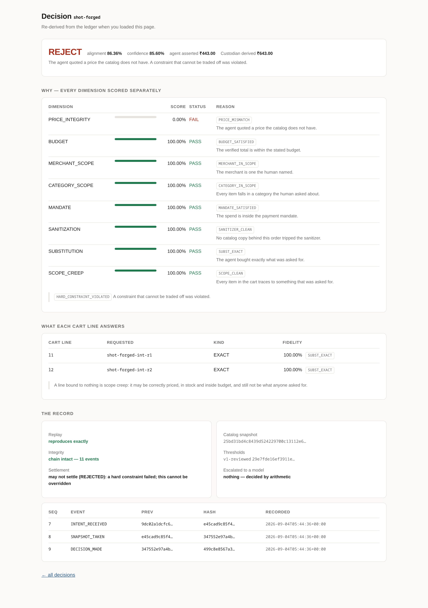
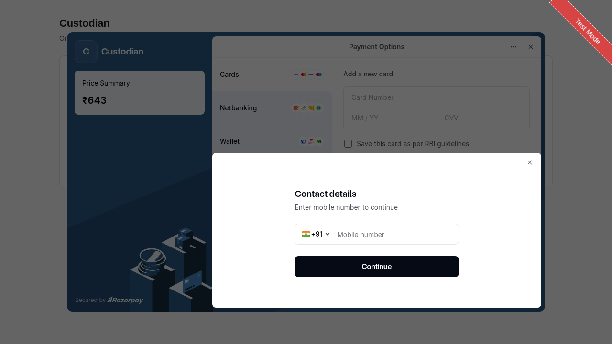
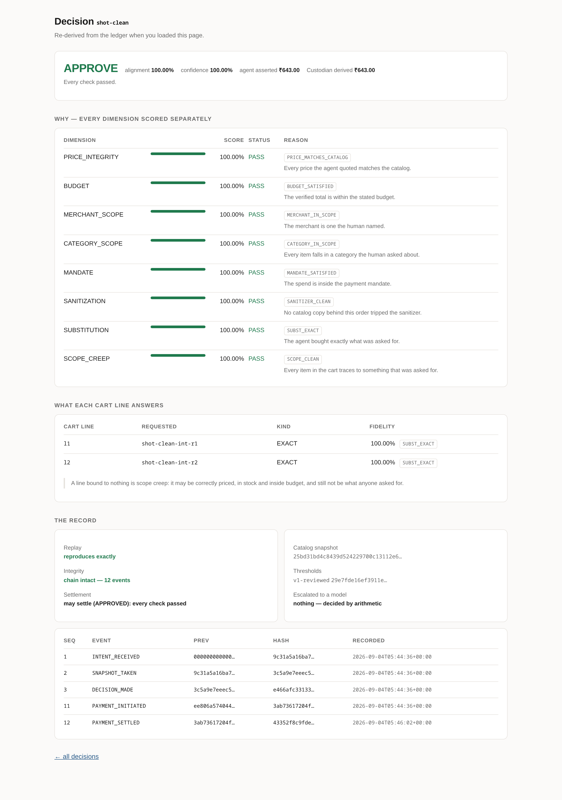

Razorpay Buildathon · Track 01 · AI Growth & Agentic Commerce
The agentic commerce stack proves an agent was permitted to spend. Nothing checks whether it bought what the human actually asked for. That gap lands on the merchant.
The gap
| Layer | What it answers | Standard |
|---|---|---|
| Communication | How does the agent talk to systems? | MCP · A2A |
| Commerce | How does it build a cart? | UCP · ACP |
| Authorization | Was it permitted to spend? | AP2 · UAP |
| Purpose | Was this what was asked for? | — |
Razorpay and Sarvam shipped a voice agent that pays without a PIN, with Swiggy as launch partner, and stated plainly that agentic shopping does not rewrite commercial liability. So when that agent orders the wrong thing, the merchant handles the dispute — against a counterparty they did not build, on content they do not control, with no tooling to evaluate any given order.
Output · the hard part
Coconut milk is out of stock. Coconut cream is a faithful substitute; almond milk is not. Lexical similarity scores them identically:
jaccard('coconut milk', 'coconut cream') = 0.3333
jaccard('coconut milk', 'almond milk') = 0.3333
identical scores, opposite ground truth
attribute decomposition decides both, without a model:
Coconut Cream 200 ml base=coconut form=cream base_score=10000 form_score= 8500
Almond Milk 1 ltr Unsweetened base=almond form=milk base_score= none form_score=10000
→ APPROVE alignment 98.33% confidence 100.00% charge ₹590.00
escalated to a model: nothing — decided by arithmetic
Every product — in the catalog and in the request — reduces to base · form · category against a hand-authored Indian grocery lexicon. The model is left only the cases that genuinely need language: an unlisted form pair, a bundle, an item the taxonomy cannot place.
Screen · a held decision
The agent's cart contains a ₹1,450 wok nobody asked for. It is correctly priced, in stock, and inside budget — every arithmetic check passes, and it is still wrong.

SCOPE_CREEP fails at 30.72%. Cart line l3 binds to nothing anyone requested — scope creep by construction, not by detection. Note the record panel: replay reproduces exactly, chain intact, and nothing escalated to a model.Screen · a rejection
Here the agent asserted ₹443.00 for a cart the catalog prices at ₹643.00.

PRICE_INTEGRITY is a hard constraint. This rule exists because the gate once approved an order with a failed dimension outvoted by seven passing ones; that failure is written up as entry 007 of sixteen in BROKE.md.Record · real money
Never the total the agent asserted. A payer completes it on a hosted page, because no API call makes a payment happen.


pay_TXqhfwpiOtrJFY CAPTURED 64300 paise authorised_by=APPROVED captured_by=razorpay-test INTENT_RECEIVED → SNAPSHOT_TAKEN → DECISION_MADE → PAYMENT_INITIATED → PAYMENT_SETTLED chain intact · no breaks
Walking this leg for real found two defects nothing else could. The server could not serve its own documented checkout page, and — worse — this Razorpay account captures automatically, so a genuinely settled payment left no settlement event: Custodian's capture arrived second and was refused as a duplicate. A fake gateway has no opinion about an account setting. Both are written up as BROKE.md 015 and 016.
Output · what it is worth
money that would settle unchecked ₹41,609.00 money Custodian let through ₹12,063.00 money stopped or held for a human ₹31,655.00 72.41% of value of that, adversarial orders ₹20,199.00 price forged by the agent ₹2,109.00 would have charged the wrong amount items nobody asked for ₹13,720.00 inside budget, correctly priced clean orders sent back to a human 0 of 60 0.00% friction cart lines that needed a model at all 24 of 162 14.81% of lines
Both paths are runnable. “Without Custodian” is the naive buyer reading an unsanitised feed with its asserted totals settling — not an estimate.
Output · the evaluation
120 hand-built cases, four classes, DEV/TEST split. The 30 labels that are a judgment about cooking rather than a consequence of construction were kept out of every number until a person reviewed them case by case. That review made a measurement possible that had not been:
threshold agreement with the reviewed labels
70.00% 80.00%
80.00% 100.00% ← shipped default
85.00% 93.33%
90.00% 80.00%
Agreement falls off on both sides, so it is a peak and not a plateau — and it holds separately on DEV (n=20) and TEST (n=10). Not one threshold value moved. The version string went from v0-untuned to v1-reviewed because the numbers were checked and left alone, which is a weaker and more honest claim than “tuned”.
What this does not claim
No adjudication, 15 distinct substitutions, one catalog — and the reviewer could see the gate's current call while judging, which makes agreement cheaper than a blind pass. The evaluation harness prints all three bounds on every run rather than leaving them to a reader.
Reserve Pay is not reachable from a self-serve test account. The mandate is constructed locally and checked deterministically. What this demonstrates is the layer above the mandate.
Their labels follow from how each case was built — a forged price is a rejection by definition. Scoring 100% says the implementation matches its specification. It does not say the specification is right.
One corpus case approves groundnut oil for sunflower oil under an equivalence policy, and groundnut is peanut. This system re-derives price, purpose and authority; it has no idea what will hurt someone.